Matrices
Matrices generated locally by matrixdepot(name, args...). Each section shows the documentation also displayed by mdinfo(name) and, where available, a plot of the matrix.
binomial
MatrixDepot.binomialm — Function
Binomial Matrix
The matrix is a multiple of an involutory matrix.
Input options:
- [type,] dim: the dimension of the matrix.
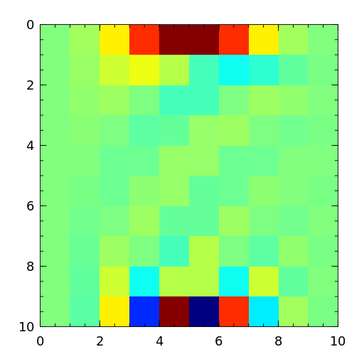
cauchy
MatrixDepot.cauchy — Function
Cauchy Matrix
Given two vectors x and y, the (i,j) entry of the Cauchy matrix is 1/(x[i]+y[j]).
Input options:
[type,] x, y: two vectors.
[type,] x: a vector.
ydefaults tox.[type,] dim: the dimension of the matrix.
xandydefault to[1:dim;].
Groups: ["inverse", "illcond", "symmetric", "posdef"]
References:
N. J. Higham, Accuracy and Stability of Numerical Algorithms, second edition, Society for Industrial and Applied Mathematics, Philadelphia, PA, USA, 2002; sec. 28.1
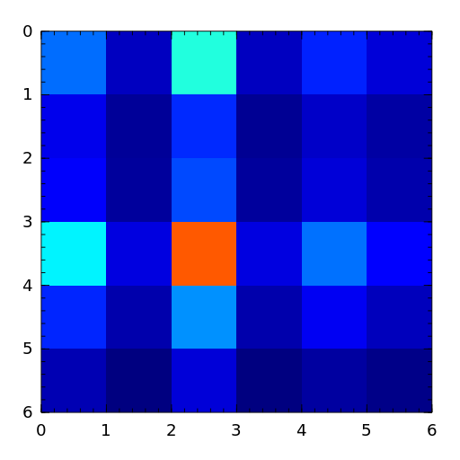
chebspec
MatrixDepot.chebspec — Function
Chebyshev Spectral Differentiation Matrix
If k = 0,the generated matrix is nilpotent and a vector with all one entries is a null vector. If k = 1, the generated matrix is nonsingular and well-conditioned. Its eigenvalues have negative real parts.
Input options:
[type,] dim, k:
dimis the dimension of the matrix andk = 0 or 1.[type,] dim:
k=0.
Groups: ["eigen"]
References:
L. N. Trefethen and M. R. Trummer, An instability phenomenon in spectral methods, SIAM J. Numer. Anal., 24 (1987), pp. 1008-1023.
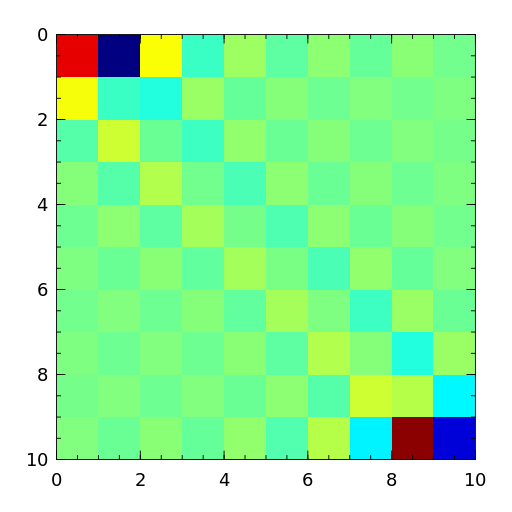
chow
MatrixDepot.chow — Function
Chow Matrix
The Chow matrix is a singular Toeplitz lower Hessenberg matrix.
Input options:
[type,] dim, alpha, delta:
dimis dimension of the matrix.alpha,deltaare scalars such thatA[i,i] = alpha + deltaandA[i,j] = alpha^(i + 1 -j)forj + 1 <= i.[type,] dim:
alpha = 1,delta = 0.
Groups: ["eigen"]
References:
T. S. Chow, A class of Hessenberg matrices with known eigenvalues and inverses, SIAM Review, 11 (1969), pp. 391-395.
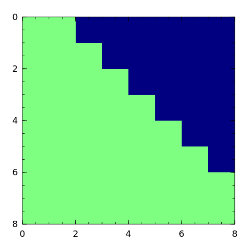
circul
MatrixDepot.circul — Function
Circulant Matrix
A circulant matrix has the property that each row is obtained by cyclically permuting the entries of the previous row one step forward.
Input options:
[type,] vec, col_dim: a vector and the column dimension.
[type,] vec: a vector.
[type,] dim: the dimension of the matrix.
Groups: ["symmetric", "posdef", "eigen"]
References:
P. J. Davis, Circulant Matrices, John Wiley, 1977.
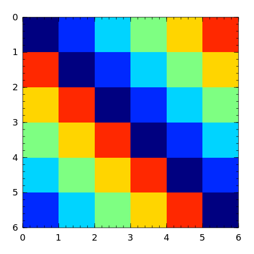
clement
MatrixDepot.clement — Function
Clement Matrix
The Clement matrix is a tridiagonal matrix with zero diagonal entries. If k = 1, the matrix is symmetric.
Input options:
[type,] dim, k:
dimis the dimension of the matrix. Ifk = 0, the matrix is of typeTridiagonal. Ifk = 1, the matrix is of typeSymTridiagonal.[type,] dim:
k = 0.
Groups: ["inverse", "symmetric", "eigen"]
References:
P. A. Clement, A class of triple-diagonal matrices for test purposes, SIAM Review, 1 (1959), pp. 50-52.
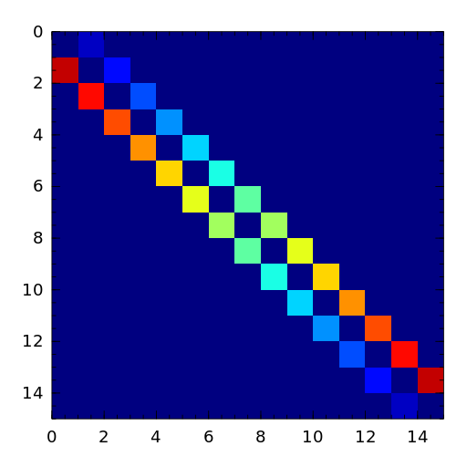
companion
MatrixDepot.companion — Function
Companion Matrix
The companion matrix to a monic polynomial a(x) = a_0 + a_1x + ... + a_{n-1}x^{n-1} + x^n is the n-by-n matrix with ones on the subdiagonal and the last column given by the coefficients of a(x).
Input options:
[type,] vec:
vecis a vector of coefficients.[type,] dim:
vec = [1:dim;].dimis the dimension of the matrix.
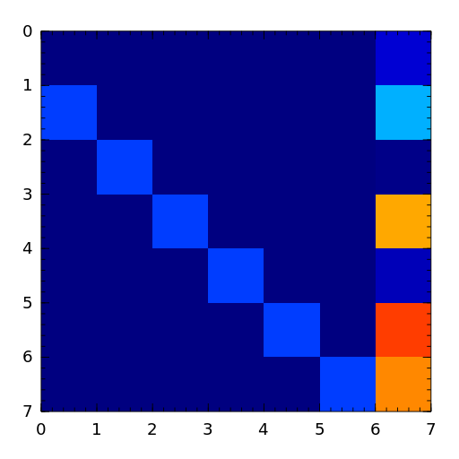
dingdong
MatrixDepot.dingdong — Function
Dingdong Matrix
The Dingdong matrix is a symmetric Hankel matrix invented by DR. F. N. Ris of IBM, Thomas J Watson Research Centre. The eigenvalues cluster around π/2 and -π/2.
Input options:
- [type,] dim: the dimension of the matrix.
Groups: ["symmetric", "eigen"]
References:
J. C. Nash, Compact Numerical Methods for Computers: Linear Algebra and Function Minimisation, second edition, Adam Hilger, Bristol, 1990 (Appendix 1).
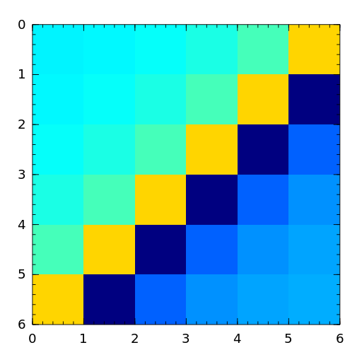
fiedler
MatrixDepot.fiedler — Function
Fiedler Matrix
The Fiedler matrix is symmetric matrix with a dominant positive eigenvalue and all the other eigenvalues are negative.
Input options:
[type,] vec: a vector.
[type,] dim:
dimis the dimension of the matrix.vec=[1:dim;].
*Groups: *["inverse", "symmetric", "eigen"]
References:
G. Szego, Solution to problem 3705, Amer. Math. Monthly, 43 (1936), pp. 246-259.
J. Todd, Basic Numerical Mathematics, Vol. 2: Numerical Algebra, Birkhauser, Basel, and Academic Press, New York, 1977, p. 159.
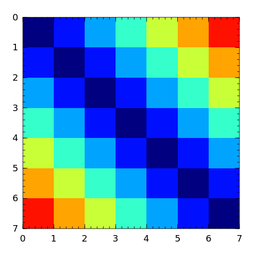
forsythe
MatrixDepot.forsythe — Function
Forsythe Matrix
The Forsythe matrix is a n-by-n perturbed Jordan block. This generator is adapted from N. J. Higham's Test Matrix Toolbox.
Input options:
[type,] dim, alpha, lambda:
dimis the dimension of the matrix.alphaandlambdaare scalars.[type,] dim:
alpha = sqrt(eps(type))andlambda = 0.
Groups: ["inverse", "illcond", "eigen"]
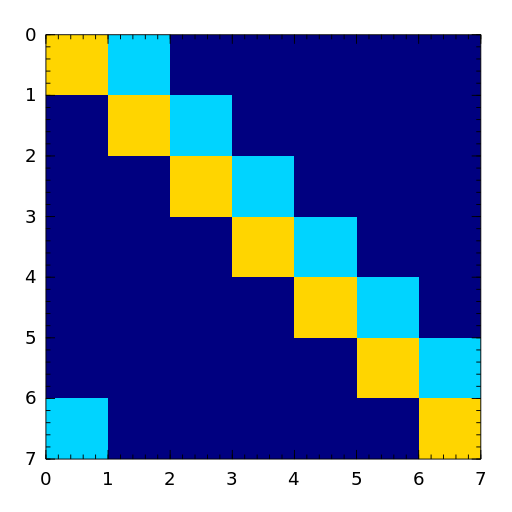
frank
MatrixDepot.frank — Function
Frank Matrix
The Frank matrix is an upper Hessenberg matrix with determinant 1. The eigenvalues are real, positive and very ill conditioned.
Input options:
[type,] dim, k:
dimis the dimension of the matrix,k = 0 or 1. Ifk = 1the matrix reflect about the anti-diagonal.[type,] dim: the dimension of the matrix.
Groups: ["illcond", "eigen"]
References:
W. L. Frank, Computing eigenvalues of complex matrices by determinant evaluation and by methods of Danilewski and Wielandt, J. Soc. Indust. Appl. Math., 6 (1958), pp. 378-392 (see pp. 385, 388).
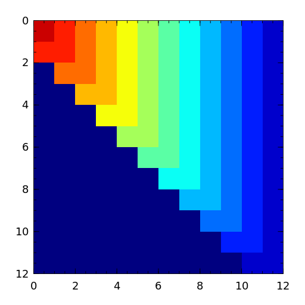
golub
MatrixDepot.golub — Function
Golub Matrix
Golub matrix is the product of two random unit lower and upper triangular matrices respectively. LU factorization without pivoting fails to reveal that such matrices are badly conditioned.
Input options:
- [type,] dim: the dimension of the matrix.
References:
D. Viswanath and N. Trefethen. Condition Numbers of Random Triangular Matrices, SIAM J. Matrix Anal. Appl. 19, 564-581, 1998.
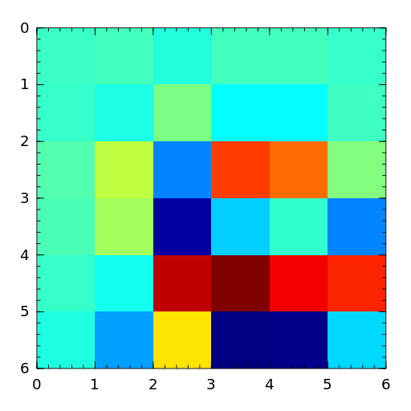
grcar
MatrixDepot.grcar — Function
Grcar Matrix
The Grcar matrix is a Toeplitz matrix with sensitive eigenvalues.
Input options:
[type,] dim, k:
dimis the dimension of the matrix andkis the number of superdiagonals.[type,] dim: the dimension of the matrix.
Groups: ["eigen"]
References:
J. F. Grcar, Operator coefficient methods for linear equations, Report SAND89-8691, Sandia National Laboratories, Albuquerque, New Mexico, 1989 (Appendix 2).
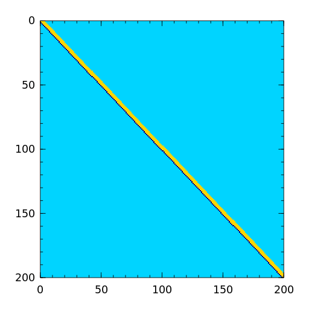
hadamard
MatrixDepot.hadamard — Function
Hadamard Matrix
The Hadamard matrix is a square matrix whose entries are 1 or -1. It was named after Jacques Hadamard. The rows of a Hadamard matrix are orthogonal.
Input options:
- [type,] dim: the dimension of the matrix,
dimis a power of 2.
Groups: ["inverse", "orthogonal", "eigen"]
References:
S. W. Golomb and L. D. Baumert, The search for Hadamard matrices, Amer. Math. Monthly, 70 (1963) pp. 12-17
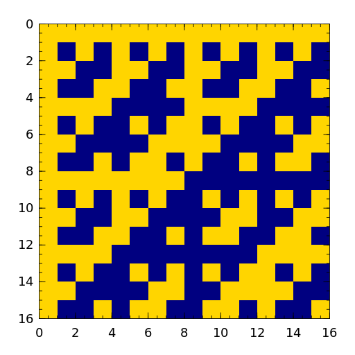
hankel
MatrixDepot.hankel — Function
Hankel Matrix
A Hankel matrix is a matrix that is symmetric and constant across the anti-diagonals.
Input options:
[type,] vc, vr:
vcandvcare the first column and last row of the matrix. If the last element ofvcdiffers from the first element ofvr, the last element ofrcprevails.[type,] v:
vc = vr = v.[type,] dim:
dimis the dimension of the matrix.v = [1:dim;].
hilb
MatrixDepot.hilb — Function
Hilbert Matrix
The Hilbert matrix has (i,j) element 1/(i+j-1). It is notorious for being ill conditioned. It is symmetric positive definite and totally positive.
Input options:
[type,] dim: the dimension of the matrix.
[type,] rowdim, coldim: the row and column dimensions.
Groups: ["inverse", "illcond", "symmetric", "posdef"]
References:
M. D. Choi, Tricks or treats with the Hilbert matrix, Amer. Math. Monthly, 90 (1983), pp. 301-312.
N. J. Higham, Accuracy and Stability of Numerical Algorithms, second edition, Society for Industrial and Applied Mathematics, Philadelphia, PA, USA, 2002; sec. 28.1.
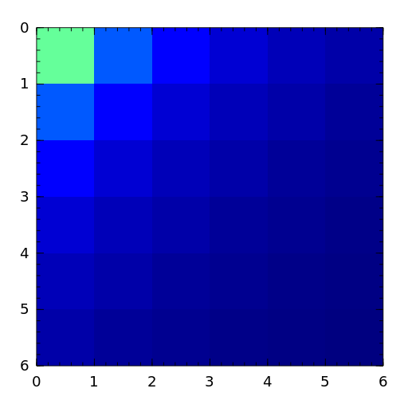
invhilb
MatrixDepot.invhilb — Function
Inverse of the Hilbert Matrix
Input options:
- [type,] dim: the dimension of the matrix.
Groups: ["inverse", "illcond", "symmetric","posdef"]
References:
M. D. Choi, Tricks or treats with the Hilbert matrix, Amer. Math. Monthly, 90 (1983), pp. 301-312.
N. J. Higham, Accuracy and Stability of Numerical Algorithms, second edition, Society for Industrial and Applied Mathematics, Philadelphia, PA, USA, 2002; sec. 28.1.
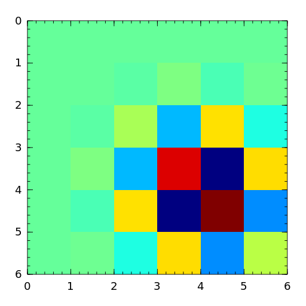
invol
MatrixDepot.invol — Function
Involutory Matrix
An involutory matrix is a matrix that is its own inverse.
Input options:
- [type,] dim:
dimis the dimension of the matrix.
Groups: ["inverse", "illcond", "eigen"]
References:
A. S. Householder and J. A. Carpenter, The singular values of involutory and of idempotent matrices, Numer. Math. 5 (1963), pp. 234-237.
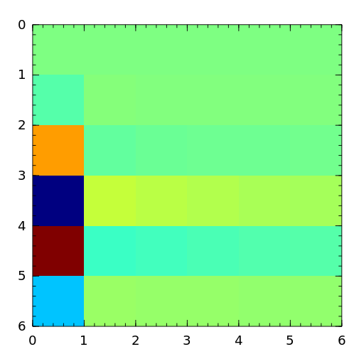
kahan
MatrixDepot.kahan — Function
Kahan Matrix
The Kahan matrix is an upper trapezoidal matrix, i.e., the (i,j) element is equal to 0 if i > j. The useful range of θ is 0 < θ < π. The diagonal is perturbed by pert*eps()*diagm([n:-1:1;]).
Input options:
[type,] rowdim, coldim, θ, pert:
rowdimandcoldimare the row and column dimensions of the matrix.θandpertare scalars.[type,] dim, θ, pert:
dimis the dimension of the matrix.[type,] dim:
θ = 1.2,pert = 25.
Groups: ["inverse", "illcond"]
References:
W. Kahan, Numerical linear algebra, Canadian Math. Bulletin, 9 (1966), pp. 757-801.
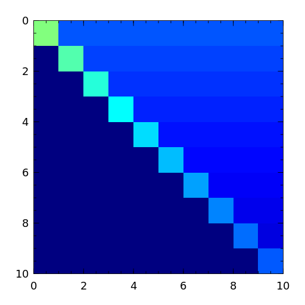
kms
MatrixDepot.kms — Function
Kac-Murdock-Szego Toeplitz matrix
Input options:
[type,] dim, rho:
dimis the dimension of the matrix,rhois a scalar such thatA[i,j] = rho^(abs(i-j)).[type,] dim:
rho = 0.5.
Groups: ["inverse", "illcond", "symmetric", "posdef"]
References:
W. F. Trench, Numerical solution of the eigenvalue problem for Hermitian Toeplitz matrices, SIAM J. Matrix Analysis and Appl., 10 (1989), pp. 135-146 (and see the references therein).
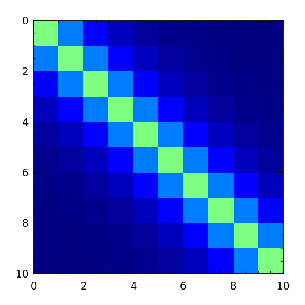
lehmer
MatrixDepot.lehmer — Function
Lehmer Matrix
The Lehmer matrix is a symmetric positive definite matrix. It is totally nonnegative. The inverse is tridiagonal and explicitly known
Input options:
- [type,] dim: the dimension of the matrix.
Groups: ["inverse", "symmetric", "posdef"]
References:
M. Newman and J. Todd, The evaluation of matrix inversion programs, J. Soc. Indust. Appl. Math., 6 (1958), pp. 466-476. Solutions to problem E710 (proposed by D.H. Lehmer): The inverse of a matrix, Amer. Math. Monthly, 53 (1946), pp. 534-535.
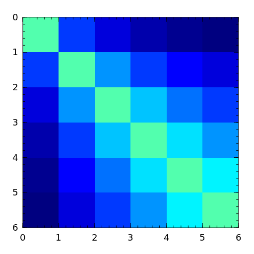
lotkin
MatrixDepot.lotkin — Function
Lotkin Matrix
The Lotkin matrix is the Hilbert matrix with its first row altered to all ones. It is unsymmetric, illcond and has many negative eigenvalues of small magnitude.
Input options:
- [type,] dim:
dimis the dimension of the matrix.
Groups: ["inverse", "illcond", "eigen"]
References:
M. Lotkin, A set of test matrices, MTAC, 9 (1955), pp. 153-161.
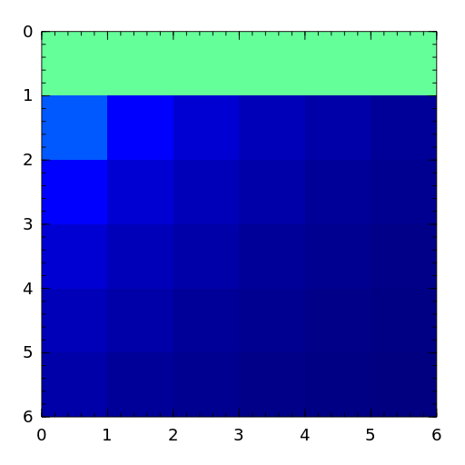
magic
MatrixDepot.magic — Function
Magic Square Matrix
The magic matrix is a matrix with integer entries such that the row elements, column elements, diagonal elements and anti-diagonal elements all add up to the same number.
Input options:
- [type,] dim: the dimension of the matrix.
Groups: ["inverse"]
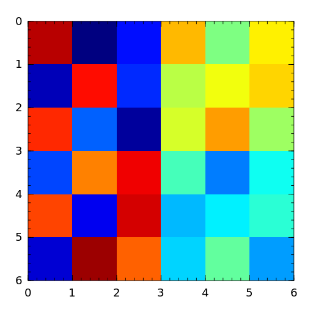
minij
MatrixDepot.minij — Function
MIN[I,J] Matrix
A matrix with (i,j) entry min(i,j). It is a symmetric positive definite matrix. The eigenvalues and eigenvectors are known explicitly. Its inverse is tridiagonal.
Input options:
- [type,] dim: the dimension of the matrix.
Groups: ["inverse", "symmetric", "posdef", "eigen"]
References:
J. Fortiana and C. M. Cuadras, A family of matrices, the discretized Brownian bridge, and distance-based regression, Linear Algebra Appl., 264 (1997), 173-188. (For the eigensystem of A.)
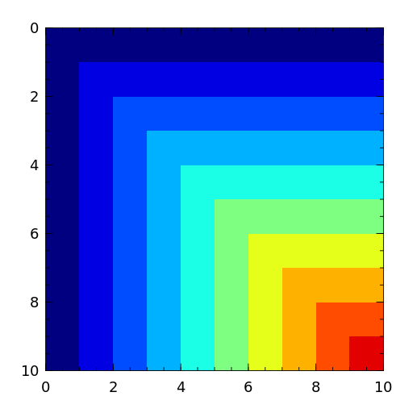
moler
MatrixDepot.moler — Function
Moler Matrix
The Moler matrix is a symmetric positive definite matrix. It has one small eigenvalue.
Input options:
[type,] dim, alpha:
dimis the dimension of the matrix,alphais a scalar.[type,] dim:
alpha = -1.
Groups: ["inverse", "illcond", "symmetric", "posdef"]
References:
J.C. Nash, Compact Numerical Methods for Computers: Linear Algebra and Function Minimisation, second edition, Adam Hilger, Bristol, 1990 (Appendix 1).
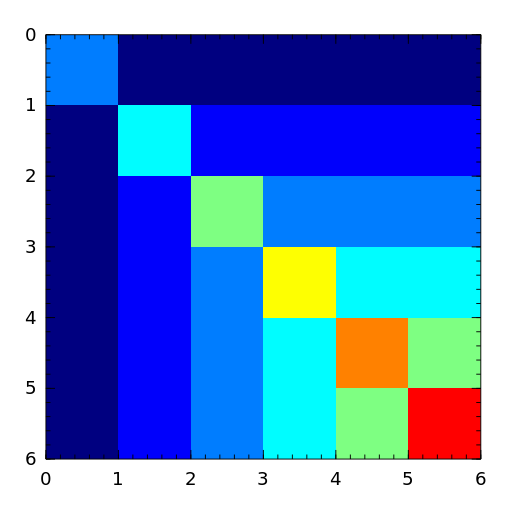
neumann
MatrixDepot.neumann — Function
Neumann Matrix
A singular matrix from the discrete Neumann problem. The matrix is sparse and the null space is formed by a vector of ones
Input options:
- [type,] dim: the dimension of the matrix is
dim^2.
Groups: ["eigen", "sparse"]
References:
R. J. Plemmons, Regular splittings and the discrete Neumann problem, Numer. Math., 25 (1976), pp. 153-161.
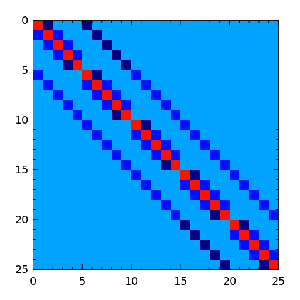
oscillate
MatrixDepot.oscillate — Function
Oscillating Matrix
A matrix A is called oscillating if A is totally nonnegative and if there exists an integer q > 0 such that A^q is totally positive.
Input options:
[type,] Σ: the singular value spectrum of the matrix.
[type,] dim, mode:
dimis the dimension of the matrix.mode = 1: geometrically distributed singular values.mode = 2: arithmetrically distributed singular values.[type,] dim:
mode = 1.
Groups: ['symmetric', 'illcond', 'posdef', 'random', 'eigen']
References:
Per Christian Hansen, Test matrices for regularization methods. SIAM J. SCI. COMPUT Vol 16, No2, pp 506-512 (1995).
parter
MatrixDepot.parter — Function
Parter Matrix
The Parter matrix is a Toeplitz and Cauchy matrix with singular values near π.
Input options:
- [type,] dim: the dimension of the matrix.
Groups: ["eigen"]
References:
The MathWorks Newsletter, Volume 1, Issue 1, March 1986, page 2. S. V. Parter, On the distribution of the singular values of Toeplitz matrices, Linear Algebra and Appl., 80 (1986), pp. 115-130.
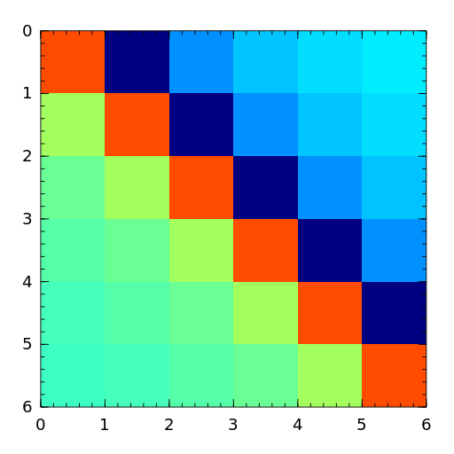
pascal
MatrixDepot.pascal — Function
Pascal Matrix
The Pascal matrix’s anti-diagonals form the Pascal’s triangle.
Input options:
- [type,] dim: the dimension of the matrix.
Groups: ["inverse", "illcond", "symmetric", "posdef", "eigen"]
References:
R. Brawer and M. Pirovino, The linear algebra of the Pascal matrix, Linear Algebra and Appl., 174 (1992), pp. 13-23 (this paper gives a factorization of L = PASCAL(N,1) and a formula for the elements of L^k).
N. J. Higham, Accuracy and Stability of Numerical Algorithms, second edition, Society for Industrial and Applied Mathematics, Philadelphia, PA, USA, 2002; sec. 28.4.
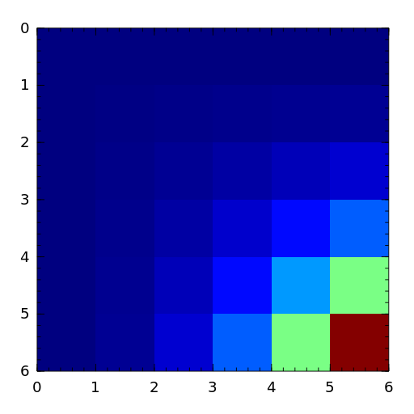
pei
MatrixDepot.pei — Function
Pei Matrix
The Pei matrix is a symmetric matrix with known inversion.
Input options:
[type,] dim, α:
dimis the dimension of the matrix.αis a scalar.[type,] dim: the dimension of the matrix.
Groups: ["inverse", "illcond", "symmetric", "posdef"]
References:
M. L. Pei, A test matrix for inversion procedures, Comm. ACM, 5 (1962), p. 508.
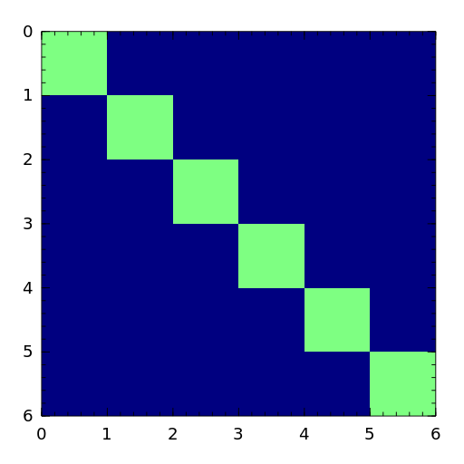
poisson
MatrixDepot.poisson — Function
Poisson Matrix
A block tridiagonal matrix from Poisson’s equation. This matrix is sparse, symmetric positive definite and has known eigenvalues. The result is of type SparseMatrixCSC.
Input options:
- [type,] dim: the dimension of the matrix is
dim^2.
Groups: ["inverse", "symmetric", "posdef", "eigen", "sparse"]
References:
G. H. Golub and C. F. Van Loan, Matrix Computations, second edition, Johns Hopkins University Press, Baltimore, Maryland, 1989 (Section 4.5.4).
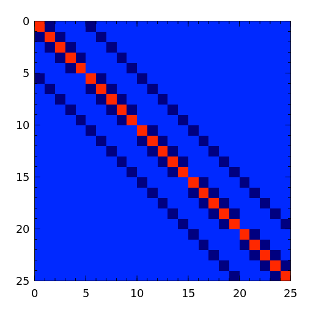
prolate
MatrixDepot.prolate — Function
Prolate Matrix
A prolate matrix is a symmetirc, ill-conditioned Toeplitz matrix.
Input options:
[type,] dim, w:
dimis the dimension of the matrix.wis a real scalar.[type,] dim: the case when
w = 0.25.
Groups: ["symmetric", "illcond"]
References:
J. M. Varah. The Prolate Matrix. Linear Algebra and Appl. 187:267–278, 1993.
randcorr
MatrixDepot.randcorr — Function
Random Correlation Matrix
A random correlation matrix is a symmetric positive semidefinite matrix with 1s on the diagonal.
Input options:
- [type,] dim: the dimension of the matrix.
Groups: ["symmetric", 'pos-semidef', "random"]
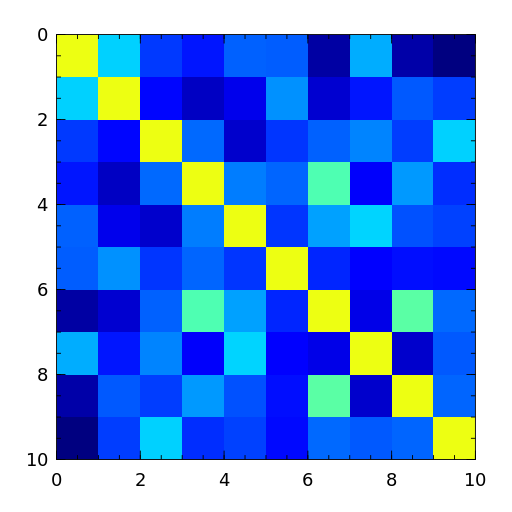
rando
MatrixDepot.rando — Function
Random Matrix with Element -1, 0, 1
Input options:
[type,] rowdim, coldim, k:
row_dimandcol_dimare row and column dimensions,k = 1: entries are 0 or 1.k = 2: entries are -1 or 1.k = 3: entries are -1, 0 or 1.[type,] dim, k:
row_dim = col_dim = dim.[type,] dim:
k = 1.
Groups: ["random"]
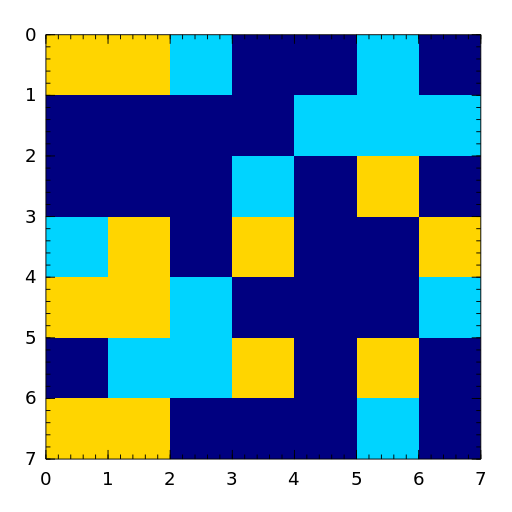
randsvd
MatrixDepot.randsvd — Function
Random Matrix with Pre-assigned Singular Values
Input options:
[type,] rowdim, coldim, kappa, mode:
row_dimandcol_dimare the row and column dimensions.kappais the condition number of the matrix.mode = 1: one large singular value.mode = 2: one small singular value.mode = 3: geometrically distributed singular values.mode = 4: arithmetrically distributed singular values.mode = 5: random singular values with unif. dist. logarithm.[type,] dim, kappa, mode:
row_dim = col_dim = dim.[type,] dim, kappa:
mode = 3.[type,] dim:
kappa = sqrt(1/eps()),mode = 3.
Groups: ["illcond", "random"]
References:
N. J. Higham, Accuracy and Stability of Numerical Algorithms, second edition, Society for Industrial and Applied Mathematics, Philadelphia, PA, USA, 2002; sec. 28.3.
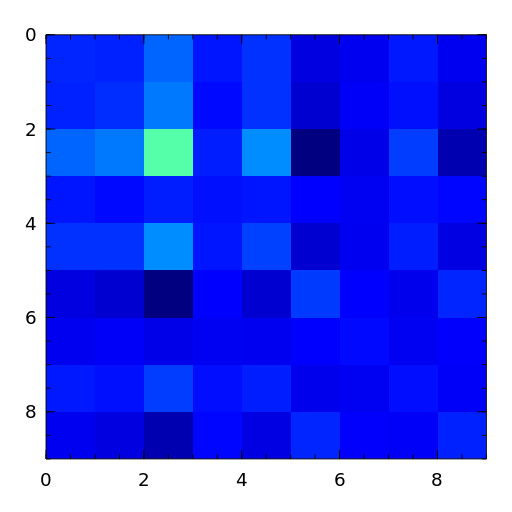
rohess
MatrixDepot.rohess — Function
Random Orthogonal Upper Hessenberg Matrix
The matrix is constructed via a product of Givens rotations.
Input options:
- [type,] dim: the dimension of the matrix.
Groups: ["random"]
References:
W. B. Gragg, The QR algorithm for unitary Hessenberg matrices, J. Comp. Appl. Math., 16 (1986), pp. 1-8.
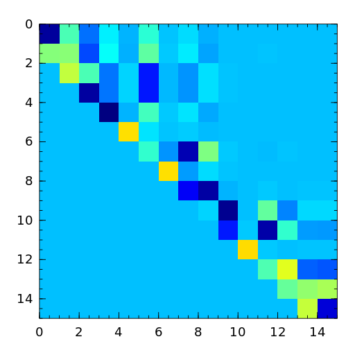
rosser
MatrixDepot.rosser — Function
Rosser Matrix
The Rosser matrix’s eigenvalues are very close together so it is a challenging matrix for many eigenvalue algorithms.
Input options:
[type,] dim, a, b:
dimis the dimension of the matrix.dimmust be a power of 2.aandbare scalars. Fordim = 8, a = 2andb = 1, the generated matrix is the test matrix used by Rosser.[type,] dim:
a = rand(1:5), b = rand(1:5).
Groups: ["eigen", "illcond", "random"]
References:
J. B. Rosser, C. Lanczos, M. R. Hestenes, W. Karush, Separation of close eigenvalues of a real symmetric matrix, Journal of Research of the National Bureau of Standards, v(47) (1951)
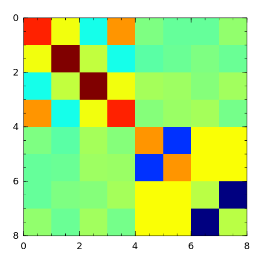
sampling
MatrixDepot.sampling — Function
Matrix with Application in Sampling Theory
A nonsymmetric matrix with eigenvalues 0, 1, 2, ... n-1.
Input options:
[type,] vec:
vecis a vector with no repeated elements.[type,] dim:
dimis the dimension of the matrix.vec = [1:dim;]/dim.
Groups: ["eigen"]
References:
L. Bondesson and I. Traat, A nonsymmetric matrix with integer eigenvalues, linear and multilinear algebra, 55(3) (2007), pp. 239-247
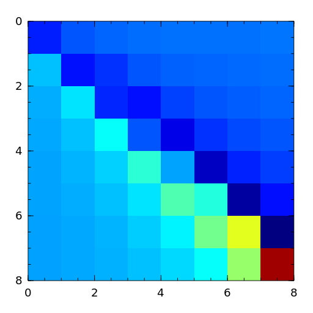
toeplitz
MatrixDepot.toeplitz — Function
Toeplitz Matrix
A Toeplitz matrix is a matrix in which each descending diagonal from left to right is constant.
Input options:
[type,] vc, vr:
vcandvrare the first column and row of the matrix.[type,] v: symmatric case, i.e.,
vc = vr = v.[type,] dim:
dimis the dimension of the matrix.v = [1:dim;]is the first row and column vector.
tridiag
MatrixDepot.tridiag — Function
Tridiagonal Matrix
Construct a tridigonal matrix of type Tridiagonal.
Input options:
[type,] v1, v2, v3:
v1andv3are vectors of subdiagonal and superdiagonal elements, respectively, andv2is a vector of diagonal elements.[type,] dim, x, y, z:
dimis the dimension of the matrix,x,y,zare scalars.xandzare the subdiagonal and superdiagonal elements, respectively, andyis the diagonal elements.[type,] dim:
x = -1, y = 2, z = -1. This matrix is also known as the second difference matrix.
Groups: ["inverse", "illcond", "posdef", "eigen"]
References:
J. Todd, Basic Numerical Mathematics, Vol. 2: Numerical Algebra, Birkhauser, Basel, and Academic Press, New York, 1977, p. 155.
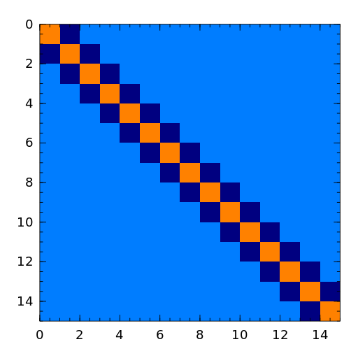
triw
MatrixDepot.triw — Function
Triw Matrix
Upper triangular matrices discussed by Wilkinson and others.
Input options:
[type,] rowdim, coldim, α, k:
row_dimandcol_dimare row and column dimension of the matrix.αis a scalar representing the entries on the superdiagonals.kis the number of superdiagonals.[type,] dim: the dimension of the matrix.
Groups: ["inverse", "illcond"]
References:
G. H. Golub and J. H. Wilkinson, Ill-conditioned eigensystems and the computation of the Jordan canonical form, SIAM Review, 18(4), 1976, pp. 578-6
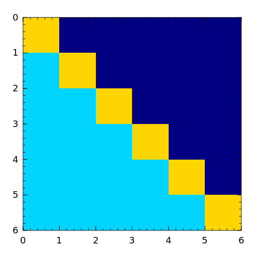
vand
MatrixDepot.vand — Function
Vandermonde Matrix
The inverse and determinat are known explicitly.
Input options:
[type,] vec, coldim:
vecis a vector, `coldim` is the number of columns.[type,] vec:
col_dim = length(vec)[type,] dim:
vec = [1:dim;]
Groups: ["inverse", "illcond"]
References:
N. J. Higham, Stability analysis of algorithms for solving confluent Vandermonde-like systems, SIAM J. Matrix Anal. Appl., 11 (1990), pp. 23-41.
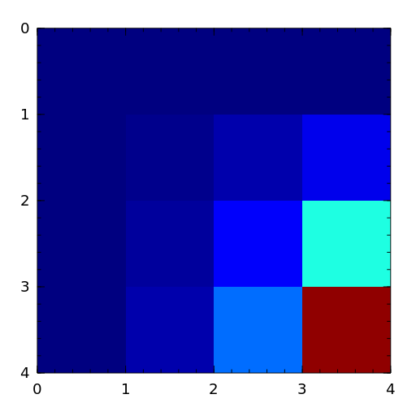
wathen
MatrixDepot.wathen — Function
Wathen Matrix
Wathen Matrix is a sparse, symmetric positive, random matrix arose from the finite element method. The generated matrix is the consistent mass matrix for a regular nx-by-ny grid of 8-nodes.
Input options:
[type,] nx, ny: the dimension of the matrix is equal to
3 * nx * ny + 2 * nx * ny + 1.[type,] n:
nx = ny = n.
Groups: ["symmetric", "posdef", "eigen", "random", "sparse"]
References:
A. J. Wathen, Realistic eigenvalue bounds for the Galerkin mass matrix, IMA J. Numer. Anal., 7 (1987), pp. 449-457.
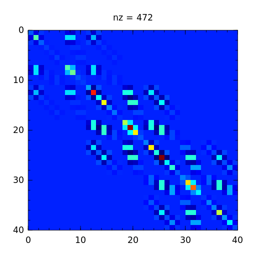
wilkinson
MatrixDepot.wilkinson — Function
Wilkinson Matrix
The Wilkinson matrix is a symmetric tridiagonal matrix with pairs of nearly equal eigenvalues. The most frequently used case is matrixdepot("wilkinson", 21). The result is of type Tridiagonal.
Input options:
- [type,] dim: the dimension of the matrix.
Groups: ["symmetric", "eigen"]
References:
J. H. Wilkinson, Error analysis of direct methods of matrix inversion, J. Assoc. Comput. Mach., 8 (1961), pp. 281-330.
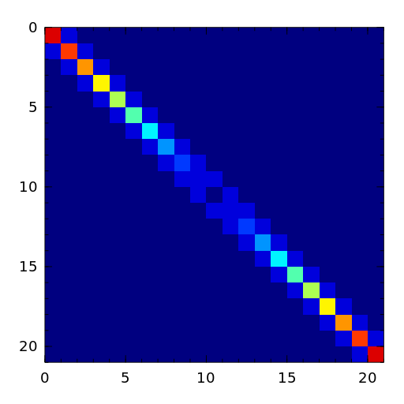